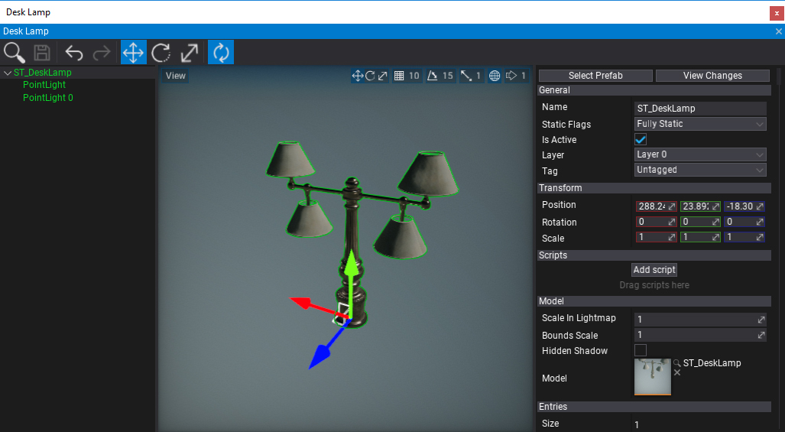
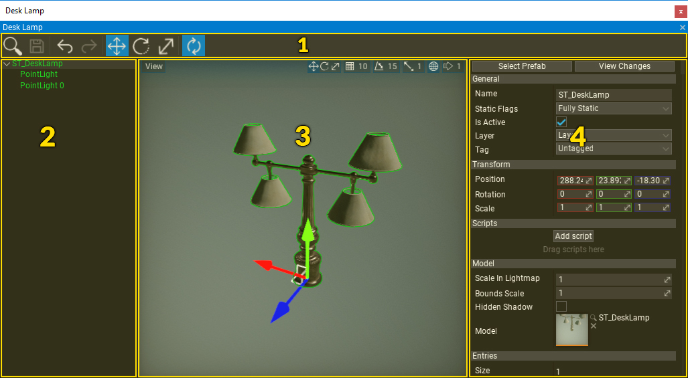

Prefab Editor

Prefab Editor Window is the main tool to preview and edit prefab assets. To show it simply double-click on a prefab in a Content Window. Saving modified prefab asset synchronizes the changes with the existing instances of the prefab in the scene including all prefabs using this prefab as a nested prefab.
Introduction
Prefab Editor works like Scene Editor combined with Scene Tree Window and Properties Window that are in-build in Flax Editor. Except Prefab Editor shows and edits only the given prefab asset.
Note
You can use widget View -> Show Default Scene to hide the default sky, directional light, and environment probe used as a default preview scene background.
Prefab Editor Window supports full undo so any of your actions can be reverted. You can also open and edit more than one prefab at once.
Live Reload

Live Reload is a feature that performs auto-synchronization of the edited prefab modification live. Updating prefab instances is very fast so the live reload can be performed very often when you edit the prefab asset. It is enabled by default but can be disabled by using dedicated tool strip button.
in Live Reload mode all changes are synchronized live without pressing Save button. It makes editing easier and helps with rapid development.
Interface
The prefab window UI consists of a toolstrip, hierarchy panel, viewport, and properties panel.

- Toolstrip
- Hierarchy Panel
- Viewport
- Properties Panel
Toolstrip
The following table lists the options in the toolstrip and what they do.
| Icon | Description |
|---|---|
 |
Shows and selects the asset in the Content Window. |
 |
Saves the prefab to the file and updates the existing prefab instances. |
| Reverts the last scene modification action (Ctrl+Z). | |
| Replies the last scene modification action (Ctrl+Y). | |
 |
Changes Gizmo tool mode to Translate (1). |
 |
Changes Gizmo tool mode to Rotate (2) |
| Changes Gizmo tool mode to Scale (3) | |
| Live changes preview (applies prefab changes on modification by auto). |
Hierarchy Panel
Hierarchy Panel shows a tree control with full hierarchy of the prefab objects. Use it to add, remove or move actors. It works similar to editor Scene Window.
Every Actor is represented by a tree node (named after the actor). You can expand and collapse the scene hierarchy by using arrow icons on the left of the node names. To select one or more nodes use LMB, Ctrl + LMB or Shift + LMB to select range of nodes.
If you select and drag the actor or selection of actors you can reorder it or reparent them.
Viewport
The viewport panel shows the preview of the prefab. You can navigate in the viewport by using the RMB + Arrows/WSAD. It works similar to editor Scene Window. Use LMB to select the objects.
In the upper left and the upper right corner of the viewport contains a widget buttons. Use them to adjust the view and configure the tool.
Properties panel
This panel shows properties of the selected objects. If you select any object from the prefab you will be able to modify its properties using this panel. It supports full undo/redo actions and uses Custom Editors pipeline to generate the UI.